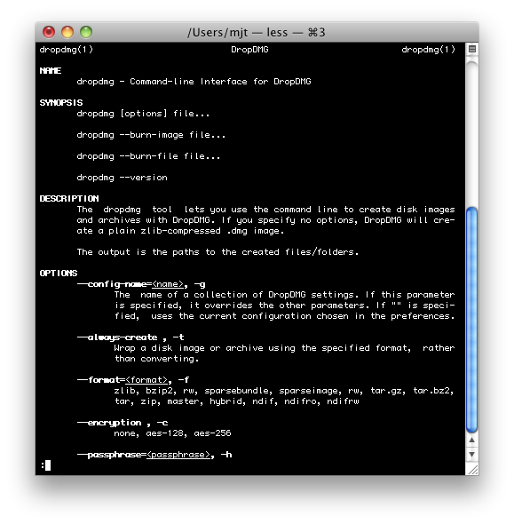

DropDMG has a command-line tool called dropdmg that can create disk images and archives and burn CDs and DVDs. This lets you control DropDMG from Terminal and automate it via shell scripts.
To install the command-line tool, click the Install “dropdmg” Tool. Once installed, DropDMG will automatically offer to update the tool when a new version is available.
For a list of the available options, type man dropdmg in Terminal.
The Sharing Licenses and Layouts section describes how you can use the dropdmg tool with licenses and layouts that are stored outside of DropDMG, e.g. under version control.

Note: The dropdmg tool is not a freestanding utility. Rather, it controls the DropDMG application, which it will launch as needed. You must be logged into the Mac with a regular user session (not just via SSH).